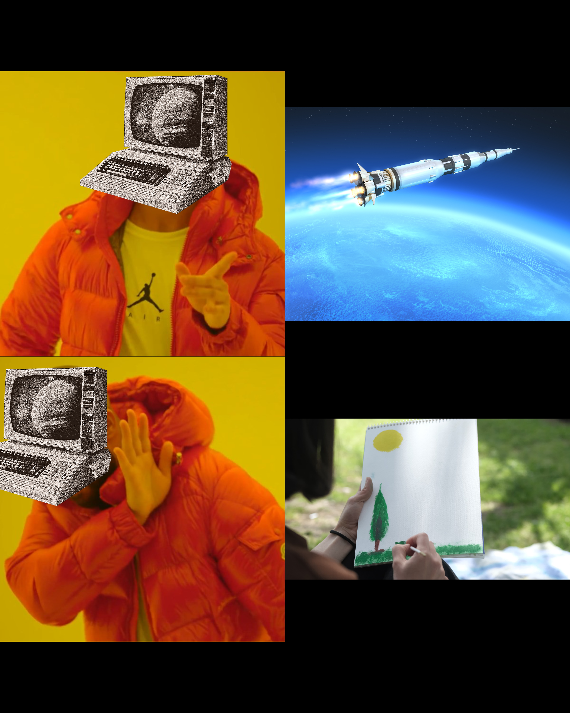
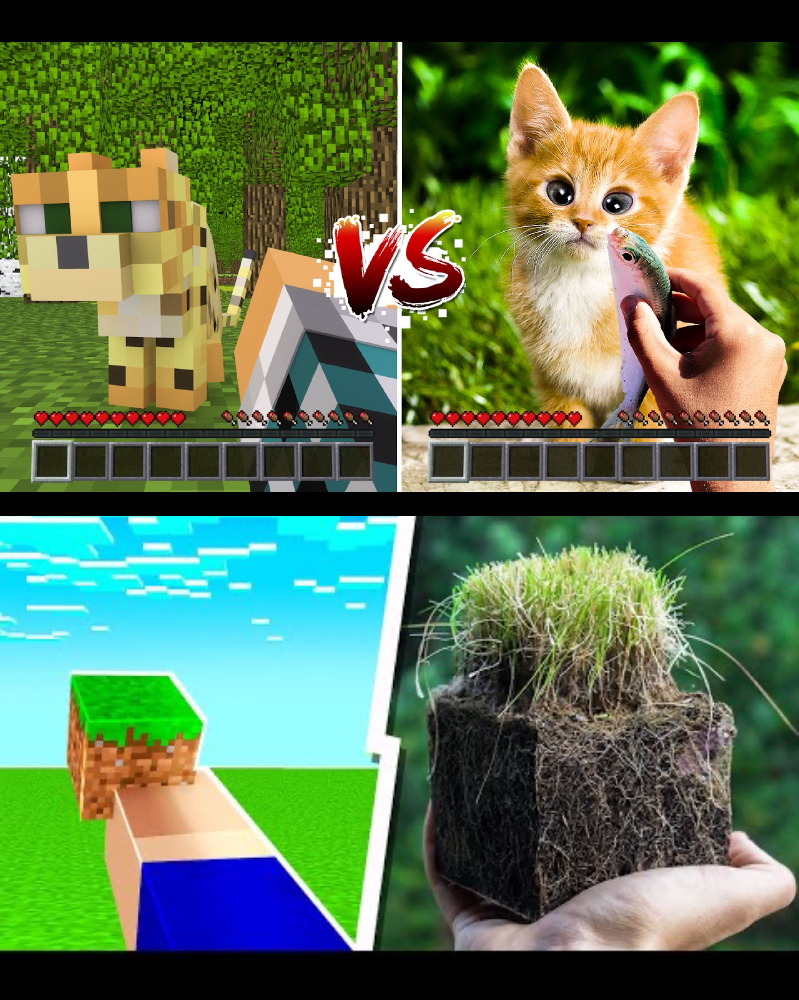
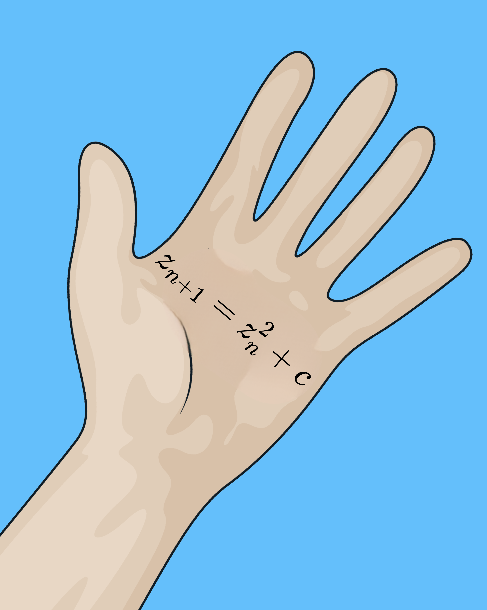
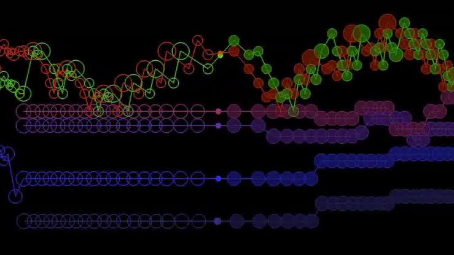

Geometría fractal
El código matemático que le enseñó a las computadoras a dibujar la naturaleza
La supercomputadora impotente

La ilusión euclidiana vs. el caos real
"Las nubes no son esferas, las montañas no son conos, las costas no son círculos, ni la corteza de un árbol es lisa, ni los relámpagos viajan en línea recta."
— Benoît Mandelbrot (1977)
¿Qué es realmente una dimensión?
Impacto en graficación: coherencia de memoria en GPUs
El atractor de Lorenz
La ecuación maestra

El algoritmo de tiempo de escape
El conjunto de Mandelbrot
Fractales en la naturaleza
El árbol bronquial
Video proveniente de: ¿Cómo funciona el sistema respiratorio? del canal de YouTube de Thomas Schwenke ES
Loren Carpenter: Vol Libre y Star Trek II
Videojuegos procedurales: No Man's Sky
El fin de las antenas externas
Criptografía del caos: el mapa de Arnold
Detección de ataques en redes
El Mandelbulb en Doctor Strange
La música fractal de Johann Sebastian Bach

La paradoja de la costa de Gran Bretaña
Conclusiones: tres lecciones para la informática
De la forma al algoritmo
No modelamos el universo piedra por piedra. Encontramos la regla recursiva correcta y dejamos que la GPU despliegue el detalle.
Eficiencia máxima y autosimilitud
Desde la memoria caché hasta antenas invisibles en nuestros celulares, la autosimilitud maximiza el rendimiento con mínimos recursos.
Un solo idioma interdisciplinario
El arte, la biología, las matemáticas y las ciencias de la computación no son disciplinas separadas: son exactamente el mismo idioma.
"No necesitamos modelar el universo piedra por piedra.
Solo necesitamos encontrar la regla recursiva correcta,
y dejar que la máquina despliegue la infinitud."